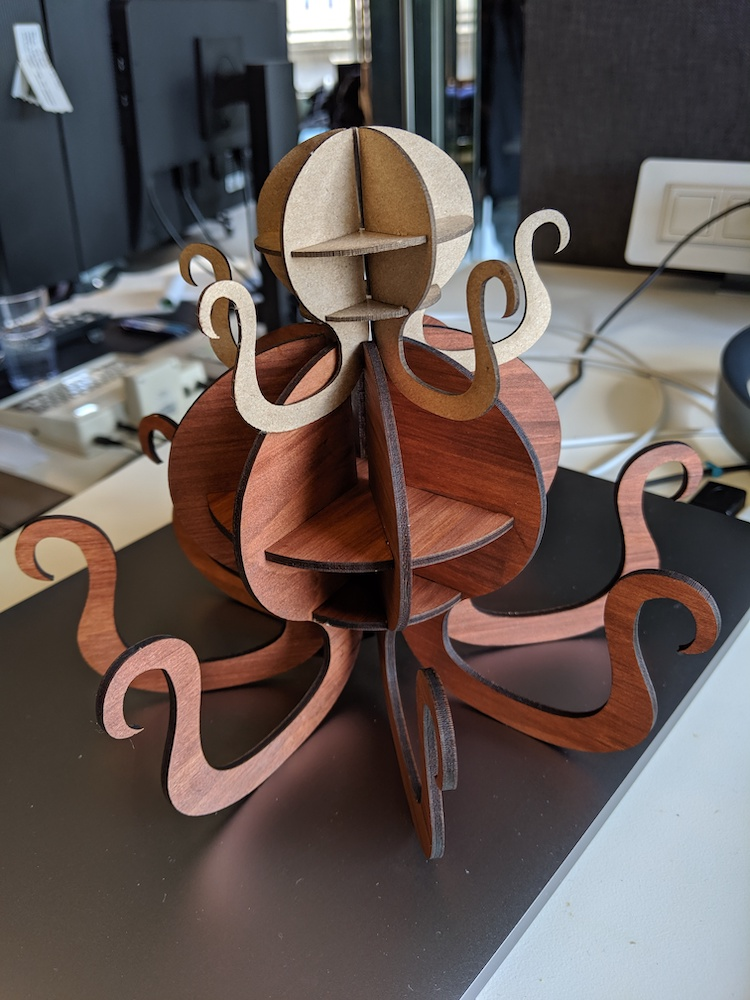

WARNING: This assignment contains cephalopods.
Problem Statement
This assignment was a continuation of the previous week's assignment. This week, the goal was to learn about CAD modeling, specifically Rhino and Grasshopper. The problem statement was:
Make a CAD model of (an updated version of) your construction kit, such that the thickness of the material is a variable input. Include other new design features to your kit, e.g. patterns or images. Cut a minimum of 6 new shapes (can be identical or different) out of 2 different thickness of material. When press-fit, your models should not come apart with a light shaking!
Brainstorming
Though the assignment was to create the previous week's construction kit using Rhino/Grasshopper, we were also given the option to make a new construction kit. I enjoyed my previous assignment but I would have spent a large portion of this week's assignment modifying how the pieces fit together in order to create a more flexible spiral hexagon tube. I wanted a change of pace for this week. I still wanted to create a kit that could be used to make a specific form. I was inspired by some of my classmates who had made vases, pumpkin-like structures, and more. I turned to Pinterest for additional inspiration, looking for interesting forms and repeating patterns that could be made via laser cutter. Eventually, I scrolled past the picture shown below and I knew exactly what I wanted to do (Pinterest link):

This class has taught me an important lesson about myself: I am incapable of scrolling past a laser cut octopus without immediately wanting to make one.
An octopus seemed perfect for this assignment: it could be press fit into a cool 3D shape and all of the tentacles could be the repeating pieces. It seemed challenging but possible to do in Rhino and Grasshopper, given my ~30 minutes of experience learning the programs in class. I decided to go for it. Pictured below is my early brainstorming (on't mind the title, I thought it needed 12 repeating pieces):
MORE Parameters (Because why stop at 1?)
I originally thought that we would need 12 repeating pieces in this kit and was planning to make a 12-armed octopus (dodekapus). Once I realized the assignment called for only 6 repeating pieces instead of 12, I knew that I wouldn't have to print so many parts. However, I liked the idea of making a pentapus, octopus, or dodekapus instead of limiting myself to a hexapus. Thus, the polypus was born!
In addition to material thickness and number of arms, I created a third parameter allowing users to adjust the size of the final cephalopod. Though this made the assignment more challenging on my end, I thought it would be really fun to create polypi of all different sizes. I was right.
Working in Rhino + Grasshopper
I had never used this software before but really enjoyed the experience. At first, I was confused by the communication between Rhino and Grasshopper. I've used software with logic similar to Grasshopper (connecting programmatic blocks). Once I understood that the result of that logic would be displayed in Rhino and eventually baked into the layers, the workflow made sense. I had a pretty good idea of how to create my shapes and tabs in Grasshopper. I also knew how each of the adjustable parameters could be worked into the logic. Despite having a clear direction, I still hit some unknowns and stumbling blocks while trying to learn the tools.
The biggest unknown I faced was the process of drawing a shape in Rhino and connecting it to logic in Grasshopper. It's quite easy to connect a custom shape to a simple geometry block but I made my life harder by adding the size parameter to my project. I was faced with the challenge of scaling a custom shape to a parameterized size. The tab widths needed to stay the same as the size changed, as did the ratio between the small and large circles. The tentacles all needed to scale. I ended up drawing a custom geometry in Rhino, measuring the distances between the points that would contain tabs, and saving these as constants to create Grasshopper scaling ratios. The solution was successful but I spent a lot of time with more constants than necessary. I also believe that there is an easier way to do this entirely in Grasshopper involving custom curves.
A few other useful things I learned while doing this project were the grouping and scaling functions in Grasshopper. After a lot of trial and error, I figured out how to group blocks together and label them in order to make my code semi-legible. I also learned about the ScaleNU block late into the project. It helped me scale the tabs without changing the width (which would change with the material thickness parameter). I was able to make a few small optimizations in my code after discovering this. I think that there are many other large optimizations that could be made to the code with more background knowledge about the capabilites of Grasshopper. I'm looking forward to learning more about the program in future weeks.
Regardless of the time it took to learn the tools and create a parameterized polypus, I had a lot of fun with this software. Thanks to a clear vision and surprisingly free weekend, I produced a set of files waiting to be made into polypi of all tentacle numbers and sizes.
Here are the links to the source files for the project:


{kind=link}
Construction
Once my files were good to go, I set my parameters to cut my first polypus (a pentapus!) and started to bake.
I trimmed some of the overlap in Rhino and then exported the shapes to Illustrator. After a few size confusions between different file formats, I ended up with an SVG in Illustrator that matched the size I had set in Rhino.
The first material I used was chipboard, measuring 1.25mm thick. I cut it at 30 power and 100 speed. I accidentally set a few tentacles to be marked instead of cut and then moved the material.
Once those tentacles were recut, I was able to start assembling. I'd forgotten to set the material thickness a little wider than the actal material, so I had to press a lot in order to get things to fit. Thankfully, chipboard is forgiving and I ended up with an adorable pentapus!
Then it was time to test whether all of those fancy parameters actually worked. I wanted to cut a bigger octopus (measuring approximately 8" across) out of 2.7mm thick wood. I tried not to make the same mistake as before by making the tabs too narrow. I quickly cut a few different test tab sizes out of wood to figure out where to set the material thickness parameter. The optimal fit measured in at 2.85mm so I reset my material thickness parameter in Grasshopper. In the future, I could create a constant offset for the material thickness parameter to avoid this test step for each new material.
I stained some plywood with mahogany color and cut out an octopus using this new width. I used power 100, speed 20. Unfortunately, I think that something got tweaked while converting all of the file formats. Despite the tabs measuring in at 2.85mm in the files, the physical tab size was closer to 2.65mm. I bravely tried press fitting the pieces together, but when the tab size is thinner than the material thickness, you're gonna have a bad time :(
I made some modifications to the end SVG file and confirmed that the tab widths were correct. I restained a new piece of plywood and put my half-limbed failpus on my desk as a measure twice/cut once memento. Thankfully, the second cut worked like a charm and after a bit of assembly I found myself the proud owner of two wonderful polypi!
Future Work
I had so much fun doing this project and I am very proud of my polypus children. Here are a few ideas I had of even more fun things that could be done with this work:
I'd like to learn more about how to communicate the properties of a shape between Grasshopper and Rhino. I would have preferred to avoid using constants based on the size of the original tentacle shape. I think that my solution could be simplified in the future.
I would also like to add more functionality to the tentacles. Cutting circles out of the sides could simulate suckers and create ledges for hanging things like earrings. Adding connectors for flat surfaces on the tops of the tentacles would let the polypus display candles, trinkets, etc.